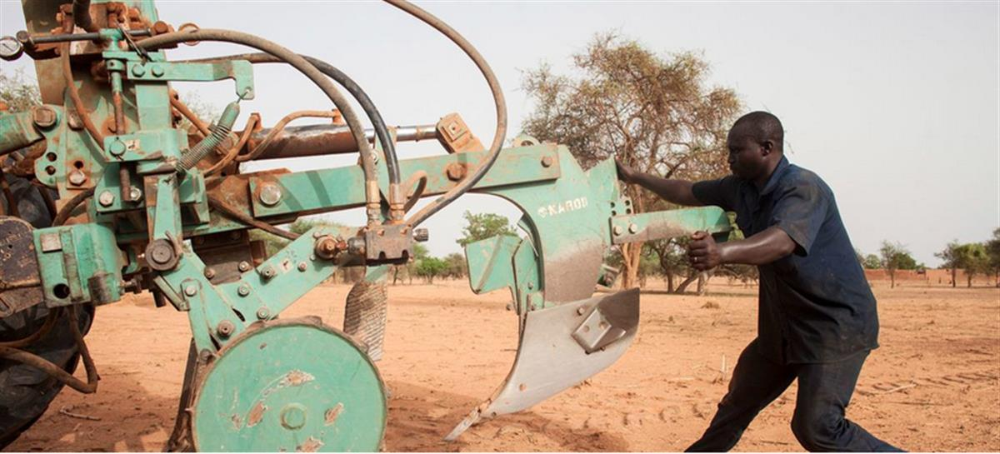
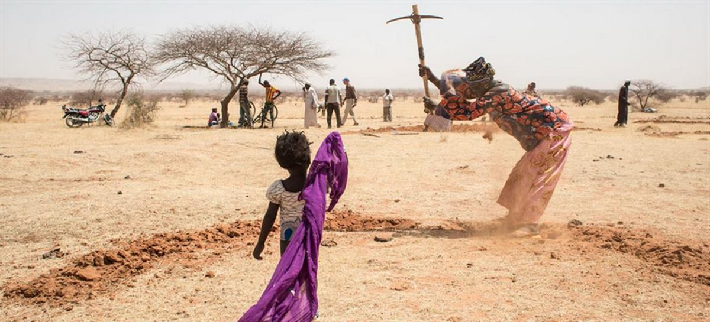
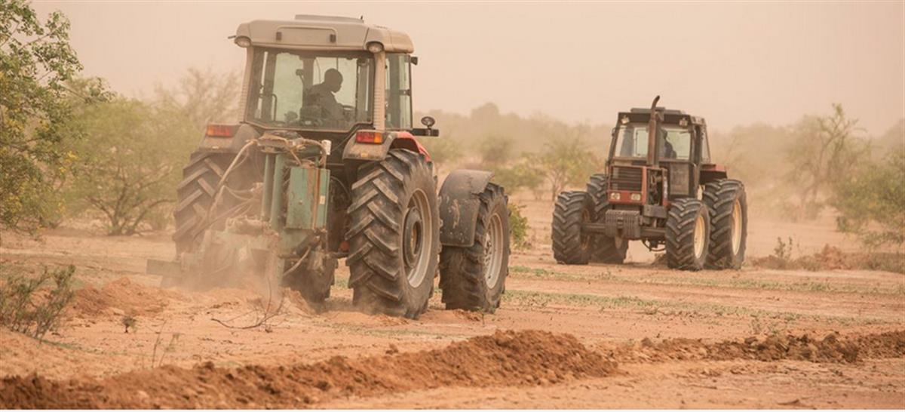

©FAO/ Giulio Napolitano I A field with mid-moon dams used to save water in the coming rainy season in Burkina Faso.
- Saturday, January 22, 2022
- UN News
Bringing dry land in the Sahel back to life
Millions of hectares of farmland are lost to the desert each year in Africa’s Sahel region, but the UN Food and Agriculture Organization (FAO) is showing that traditional knowledge, combined with the latest technology, can turn arid ground back into fertile soil.
Those trying to grow crops in the Sahel region are often faced with poor soil, erratic rainfail and long periods of drought. However, the introduction of a state-of-the art heavy digger, the Delfino plough, is proving to be, literally, a breakthrough.
As part of its Action Against Desertification (AAD) programme, the FAO has brought the Delfino to four countries in the Sahel region – Burkina Faso, Niger, Nigeria and Senegal – to cut through impacted, bone-dry soil to a depth of more than half a metre.
The Delfino plough is extremely efficient: one hundred farmers digging irrigation ditches by hand can cover a hectare a day, but when the Delfino is hooked to a tractor, it can cover 15 to 20 hectares in a day.
Once an area is ploughed, the seeds of woody and herbaceous native species are then sown directly, and inoculated seedlings planted. These species are very resilient and work well in degraded land, providing vegetation cover and improving the productivity of previously barren lands.
In Burkina Faso and Niger, the target number of hectares for immediate restoration has already been met and extended thanks to the Delfino plough. In Nigeria and Senegal, it is working to scale up the restoration of degraded land.
Millions of hectares of farmland are lost to the desert each year in Africa’s Sahel region, but the UN Food and Agriculture Organization (FAO) is showing that traditional knowledge, combined with the latest technology, can turn arid ground back into fertile soil.
Those trying to grow crops in the Sahel region are often faced with poor soil, erratic rainfail and long periods of drought. However, the introduction of a state-of-the art heavy digger, the Delfino plough, is proving to be, literally, a breakthrough.
As part of its Action Against Desertification (AAD) programme, the FAO has brought the Delfino to four countries in the Sahel region – Burkina Faso, Niger, Nigeria and Senegal – to cut through impacted, bone-dry soil to a depth of more than half a metre.
The Delfino plough is extremely efficient: one hundred farmers digging irrigation ditches by hand can cover a hectare a day, but when the Delfino is hooked to a tractor, it can cover 15 to 20 hectares in a day.
Once an area is ploughed, the seeds of woody and herbaceous native species are then sown directly, and inoculated seedlings planted. These species are very resilient and work well in degraded land, providing vegetation cover and improving the productivity of previously barren lands.
In Burkina Faso and Niger, the target number of hectares for immediate restoration has already been met and extended thanks to the Delfino plough. In Nigeria and Senegal, it is working to scale up the restoration of degraded land

©FAO/ Giulio Napolitano I Workers preparing tractors to start ploughing in Burkina Faso.Farming seen through a half-moon lens
This technology, whilst impressive, is proving to be successful because it is being used in tandem with traditional farming techniques.
“In the end the Delfino is just a plough. A very good and suitable plough, but a plough all the same,” says Moctar Sacande, Coordinator of FAO’s Action Against Desertification programme. “It is when we use it appropriately and in consultation and cooperation that we see such progress.”
The half-moon is a traditional Sahel planting method which creates contours to stop rainwater runoff, improving water infiltration and keeping the soil moist for longer. This creates favourable micro-climate conditions allowing seeds and seedlings to flourish.
The Delfino creates large half-moon catchments ready for planting seeds and seedlings, boosting rainwater harvesting tenfold and making soil more permeable for planting than the traditional - and backbreaking – method of digging by hand.
“The whole community is involved and has benefitted from fodder crops such as hay as high as their knees within just two years”, says Mr. Sacande. “They can feed their livestock and sell the surplus, and move on to gathering products such as edible fruits, natural oils for soaps, wild honey and plants for traditional medicine”.

©FAO/ Giulio Napolitan I Women dig mid-moon dams to save water in Niger.Women taking the lead
According to Nora Berrahmouni, who was FAO’s Senior Forestry Officer for the African Regional Office when the Delfino was deployed, the plough will also reduce the burden on women.
“The season for the very hard work of hand-digging the half-moon irrigation dams comes when the men of the community have had to move with the animals. So, the work falls on the women,” says Ms. Berrahmouni.
Because the Delfino plough significantly speeds up the ploughing process and reduces the physical labour needed, it gives women extra time to manage their multitude of other tasks.
The project also aims to boost women’s participation in local land restoration on a bigger scale, offering them leadership roles through the village committees that plan the work of restoring land. Under the AAD programme, each site selected for restoration is encouraged to set up a village committee to manage the resources, so as to take ownership right from the beginning.
“Many women are running the local village committees which organise these activities and they are telling us they feel more empowered and respected,” offers Mr. Sacande.
Respecting local knowledge and traditional skills is another key to success. Communities have long understood that half-moon dams are the best way of harvesting rainwater for the long dry season. The mighty Delfino is just making the job more efficient and less physically demanding.

©FAO/ Giulio Napolitano I Tractors at work to prepare the land for plantation in Burkina Faso.
Millions of hectares lost to the desert, forests under threat
And it is urgent that progress is made. Land loss is a driver of many other problems such as hunger, poverty, unemployment, forced migration, conflict and an increased risk of extreme weather events related to climate change.
In Burkina Faso, for example, a third of the landscape is degraded. This means that over nine million hectares of land, once used for agriculture, is no longer viable for farming.
It is projected that degradation will continue to expand at 360 000 hectares per year. If the situation is not reversed, forests are at risk of being cleared to make way for productive agricultural land.
Africa is currently losing four million hectares of forest every year for this reason, yet has more than 700 million hectares of degraded land viable for restoration. By bringing degraded land back to life, farmers do not have to clear additional forest land to turn into cropland for Africa’s rising population and growing food demands.
When Mr. Sacande talks about restoring land in Africa, the passion in his voice is evident. “Restoring degraded land back to productive good health is a huge opportunity for Africa. It brings big social and economic benefits to rural farming communities,” he says. “It’s a bulwark against climate change and it brings technology to enhance traditional knowledge.”
Open on original site ↗Action Against Desertification – Delfino ploughs for land preparation and landscape restoration
© UN News (2022) — All Rights ReservedOriginal source: UN News
SOURCE: GLOBAL ISSUES